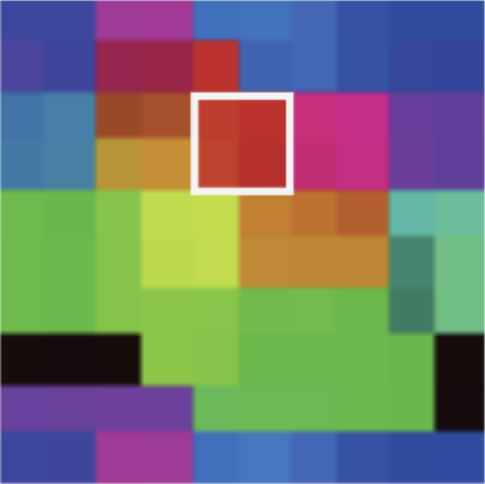
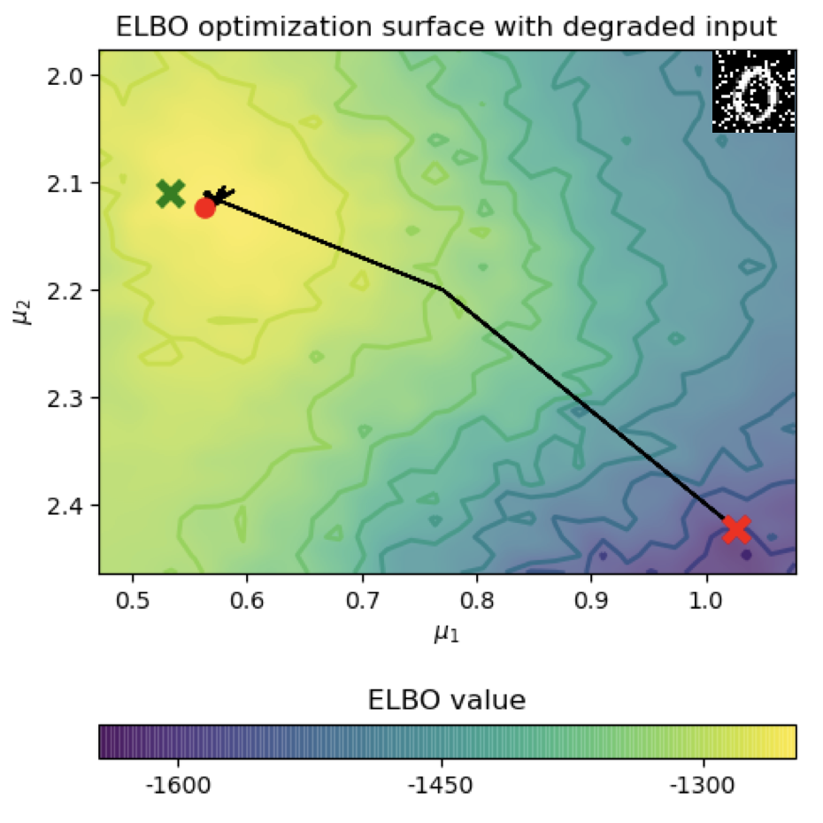
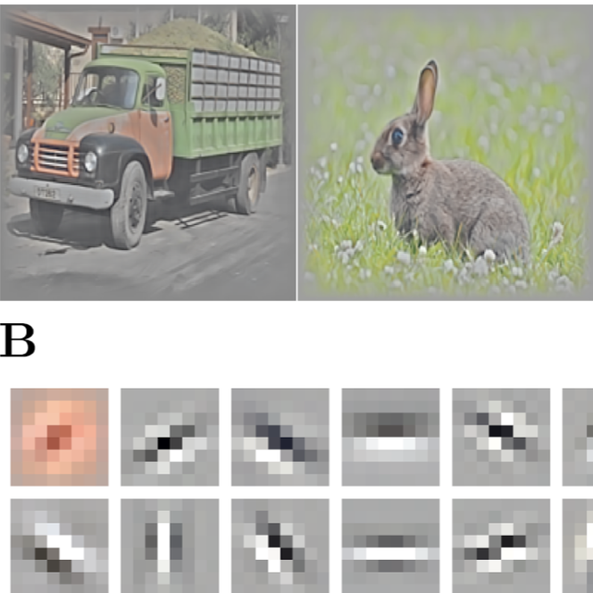
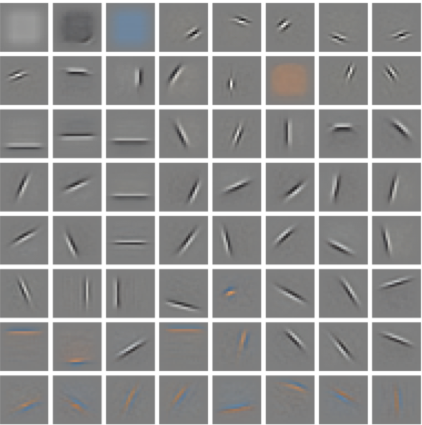

|
Hi 👋 I am Victor Boutin, a researcher in artificial intelligence and computational neuroscience. I obtained a PhD in the Institute of Neuroscience of Marseille , at the Aix-Marseille university. My PhD was supervised by Laurent University. I did my post-doc with Thomas Serre at ANITI (Toulouse, France) & Brown University (Boston, USA). I am now a consultant, and I work at developping deep generative models that are aligned with the human behavior. I'm interested in Neuroscience and Neuro-Inspired machine learning in general. More specifically, I am interested in generative modeling (diffusion models, VAEs, GANs, Auto-regressive models...). I do think that one of the computational objective of the brain is to create, train and refine a generative model of the world. The long-term goal of my research is to decipher the computation of the brain to design truly intelligent systems. |

|
|
|

|
Diversity vs. Recognizability: Human-like generalization in one-shot generative models
NeurIPS Proceedings of the Conference on Neural
Information Processing Systems, 2022
Robust generalization to new concepts has long remained a distinctive feature of human intelligence. However, recent progress in deep generative models has now led to neural architectures capable of synthesizing novel instances of unknown visual concepts from a single training example. Yet, a more precise comparison between these models and humans is not possible because existing performance metrics for generative models (i.e., FID, IS, likelihood) are not appropriate for the one-shot generation scenario. Here, we propose a new framework to evaluate one-shot generative models along two axes: sample recognizability vs. diversity (i.e., intra-class variability). Using this framework, we perform a systematic evaluation of representative one-shot generative models on the Omniglot handwritten dataset. We first show that GAN-like and VAE-like models fall on opposite ends of the diversity-recognizability space. Extensive analyses of the effect of key model parameters further revealed that spatial attention and context integration have a linear contribution to the diversity-recognizability trade-off. In contrast, disentanglement transports the model along a parabolic curve that could be used to maximize recognizability. Using the diversity-recognizability framework, we were able to identify models and parameters that closely approximate human data. |
|

|
Pooling strategies in V1 can account for the functional and structural diversity across species
PlosCB Plos Computational Biology, 2022
Neurons in the primary visual cortex are selective to orientation with various degrees of selectivity to the spatial phase, from high selectivity in simple cells to low selectivity in complex cells. Various computational models have suggested a possible link between the presence of phase invariant cells and the existence of orientation maps in higher mammals’ V1. These models, however, do not explain the emergence of complex cells in animals that do not show orientation maps. In this study, we build a theoretical model based on a convolutional network called Sparse Deep Predictive Coding (SDPC) and show that a single computational mechanism, pooling, allows the SDPC model to account for the emergence in V1 of complex cells with or without that of orientation maps, as observed in distinct species of mammals. In particular, we observed that pooling in the feature space is directly related to the orientation map formation while pooling in the retinotopic space is responsible for the emergence of a complex cells population. Introducing different forms of pooling in a predictive model of early visual processing as implemented in SDPC can therefore be viewed as a theoretical framework that explains the diversity of structural and functional phenomena observed in V1. |
|

|
Iterative VAE as a predictive brain model for out-of-distribution generalization
NeurIPS SVRHM workshop of the Conference on Neural
Information Processing Systems, 2020
Our ability to generalize beyond training data to novel, out-of-distribution, image degradations is a hallmark of primate vision. The predictive brain, exemplified by predictive coding networks (PCNs), has become a prominent neuroscience theory of neural computation. Motivated by the recent successes of variational autoencoders (VAEs) in machine learning, we rigorously derive a correspondence between PCNs and VAEs. This motivates us to consider iterative extensions of VAEs (iVAEs) as plausible variational extensions of the PCNs. We further demonstrate that iVAEs generalize to distributional shifts significantly better than both PCNs and VAEs. In addition, we propose a novel measure of recognizability for individual samples which can be tested against human psychophysical data. Overall, we hope this work will spur interest in iVAEs as a promising new direction for modeling in neuroscience. |
|

|
Sparse Deep Predictive Coding captures contour integration capabilities of the early visual cortex
Plos Computational Biology, 2021
Both neurophysiological and psychophysical experiments have pointed out the crucial role of recurrent and feedback connections to process context-dependent information in the early visual cortex. While numerous models have accounted for feedback effects at either neural or representational level, none of them were able to bind those two levels of analysis. Is it possible to describe feedback effects at both levels using the same model? We answer this question by combining Predictive Coding (PC) and Sparse Coding (SC) into a hierarchical and convolutional framework applied to realistic problems. In the Sparse Deep Predictive Coding (SDPC) model, the SC component models the internal recurrent processing within each layer, and the PC component describes the interactions between layers using feedforward and feedback connections. Here, we train a 2-layered SDPC on two different databases of images, and we interpret it as a model of the early visual system (V1 & V2). We first demonstrate that once the training has converged, SDPC exhibits oriented and localized receptive fields in V1 and more complex features in V2. Second, we analyze the effects of feedback on the neural organization beyond the classical receptive field of V1 neurons using interaction maps. These maps are similar to association fields and reflect the Gestalt principle of good continuation. We demonstrate that feedback signals reorganize interaction maps and modulate neural activity to promote contour integration. Third, we demonstrate at the representational level that the SDPC feedback connections are able to overcome noise in input images. Therefore, the SDPC captures the association field principle at the neural level which results in a better reconstruction of blurred images at the representational level. |
|

|
Effect of top-down connections in Hierarchical Sparse Coding
Neural Computation Neural Computation 32 (1), 2279 - 2309
Hierarchical Sparse Coding (HSC) is a powerful model to efficiently represent multi- dimensional, structured data such as images. The simplest solution to solve this com- putationally hard problem is to decompose it into independent layer-wise subproblems. However, neuroscientific evidence would suggest inter-connecting these subproblems as in the Predictive Coding (PC) theory, which adds top-down connections between consecutive layers. In this study, a new model called 2-Layers Sparse Predictive Coding (2L-SPC) is introduced to assess the impact of this inter-layer feedback connection. In particular, the 2L-SPC is compared with a Hierarchical Lasso (Hi-La) network made out of a sequence of independent Lasso layers. The 2L-SPC and a 2-layers Hi-La net- works are trained on 4 different databases and with different sparsity parameters on each layer. First, we show that the overall prediction error generated by 2L-SPC is lower thanks to the feedback mechanism as it transfers prediction error between layers. Second, we demonstrate that the inference stage of the 2L-SPC is faster to converge than for the Hi-La model. Third, we show that the 2L-SPC also accelerates the learning process. Finally, the qualitative analysis of both models dictionaries, supported by their activation probability, show that the 2L-SPC features are more generic and informative. |